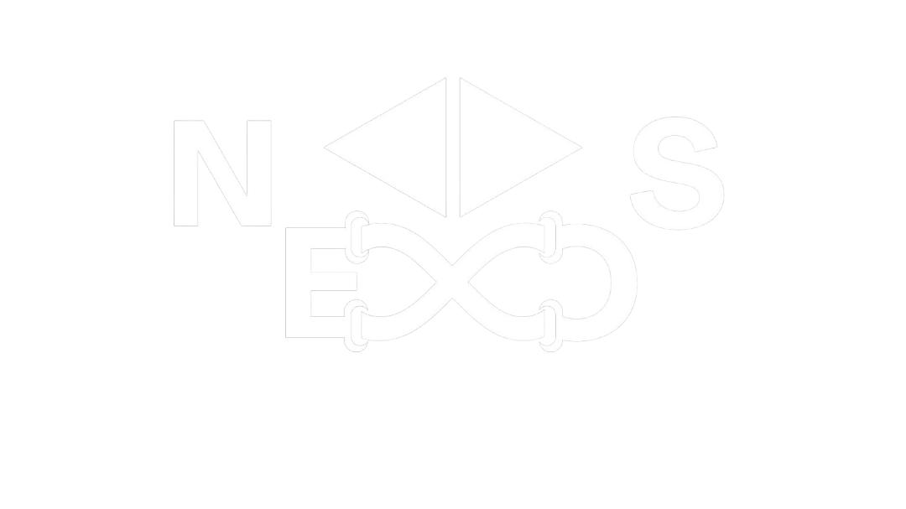
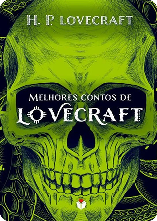
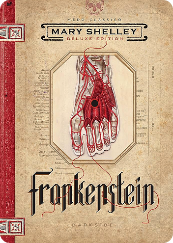
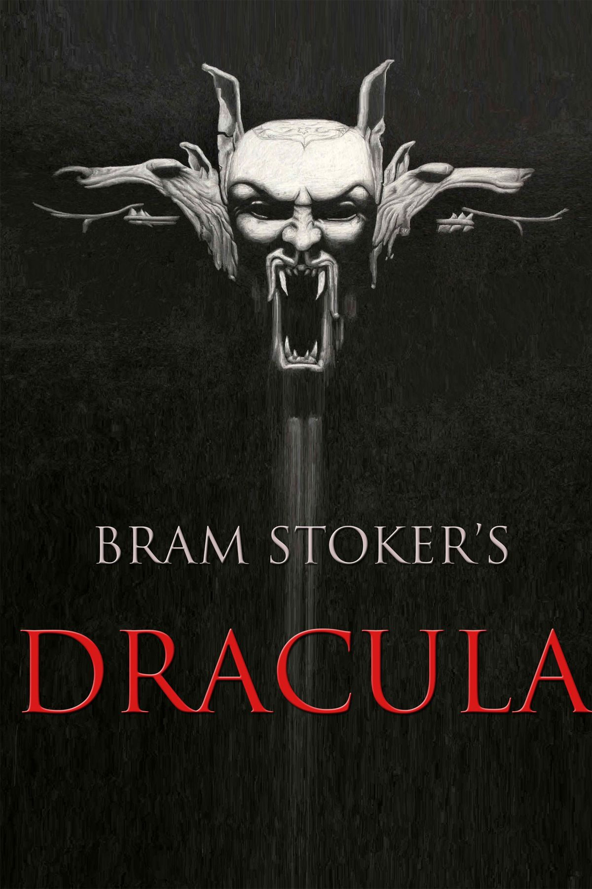
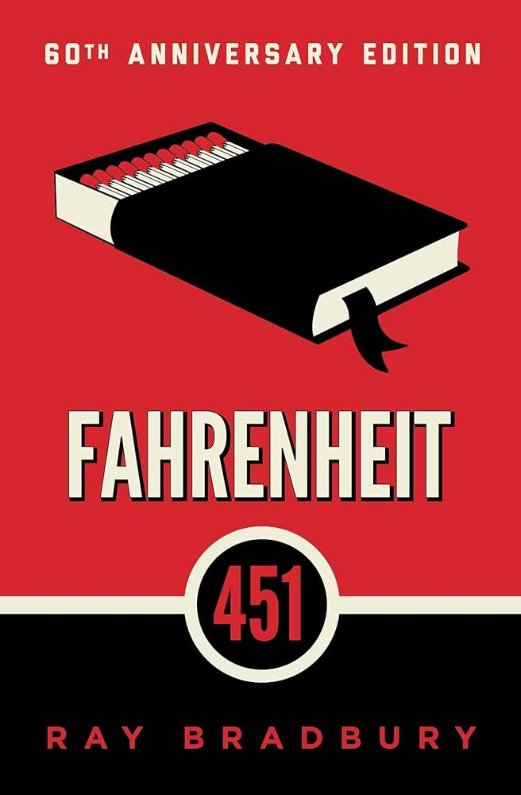
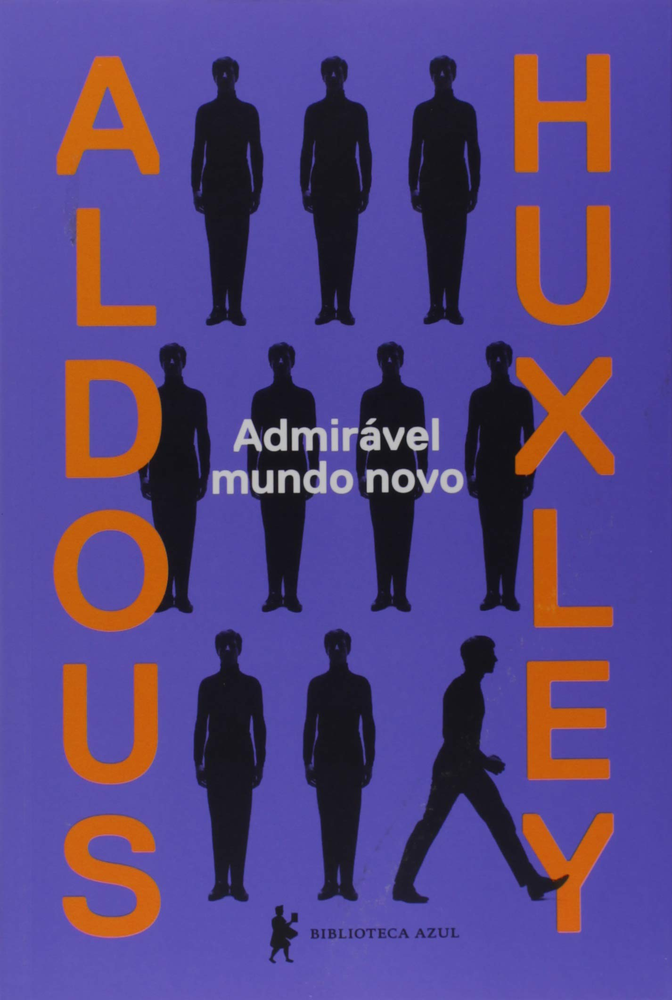
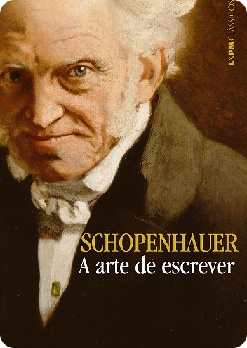
Duna
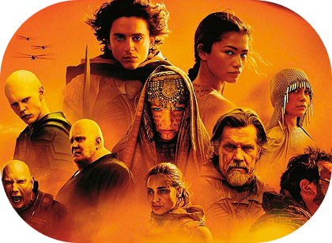
Farenheit
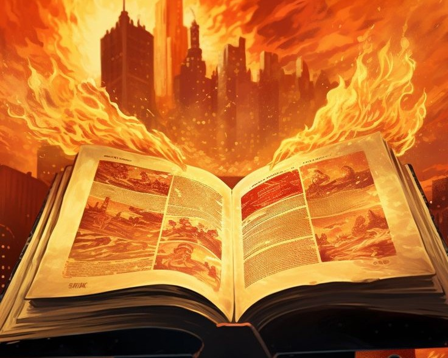
Admirável Mundo Novo
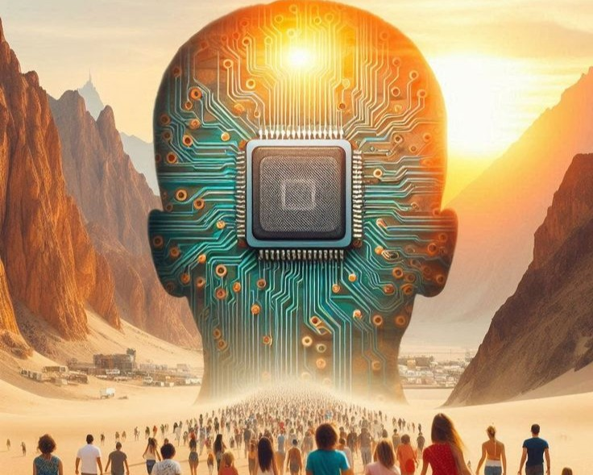
Confira nossas recomendações
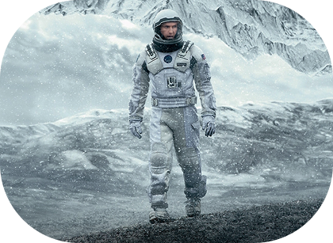
Frankenstein
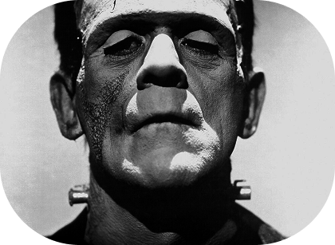
A Arte de Escrever
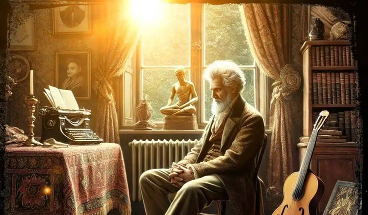
Assim Falou Zaratustra
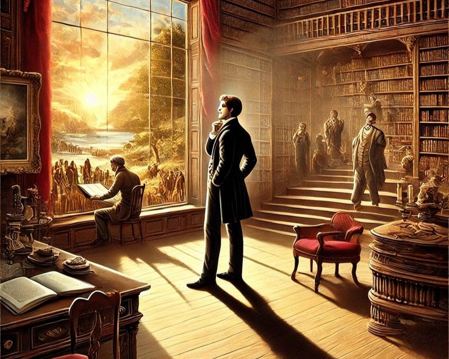
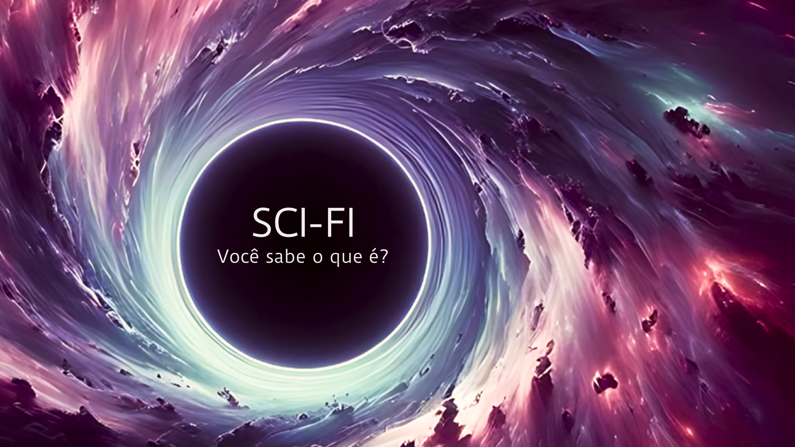
A ficção científica é o laboratório da imaginação. É onde escritores, cineastas e artistas testam ideias que ainda não existem, mas que um dia podem se tornar realidade. Em suas páginas ou telas, vemos humanos cruzando galáxias, robôs desenvolvendo sentimentos e sociedades transformadas pela tecnologia.
Somos uma equipe formada por quatro pessoas, movidas por um interesse comum na ficção e filosofia. Os conteúdos desenvolvidos tem o objetivo de compartilhar conhecimento, estimular a leitura e a reflexão, e aproximar mais pessoas desses universos fascinantes.